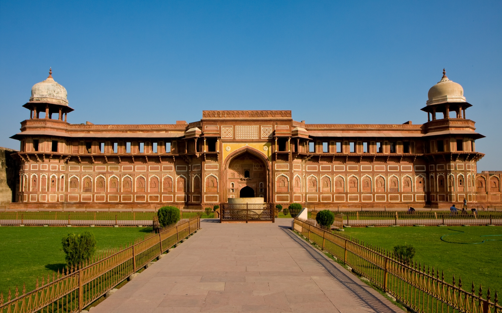
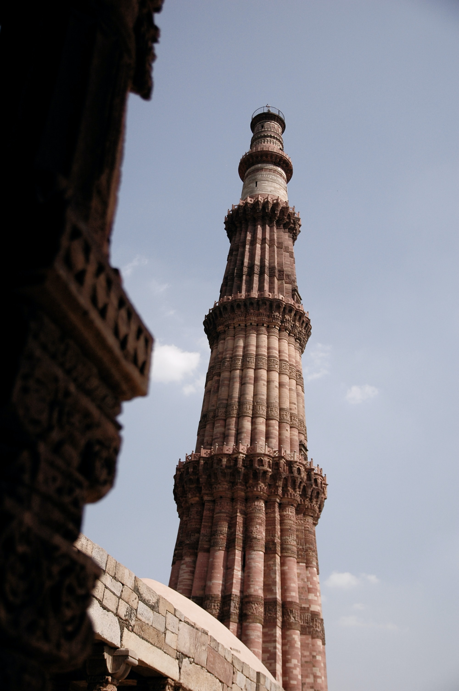
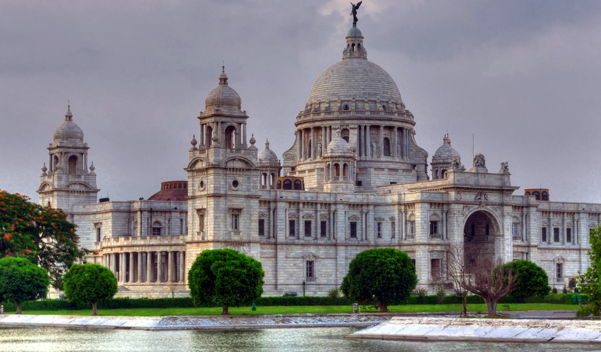
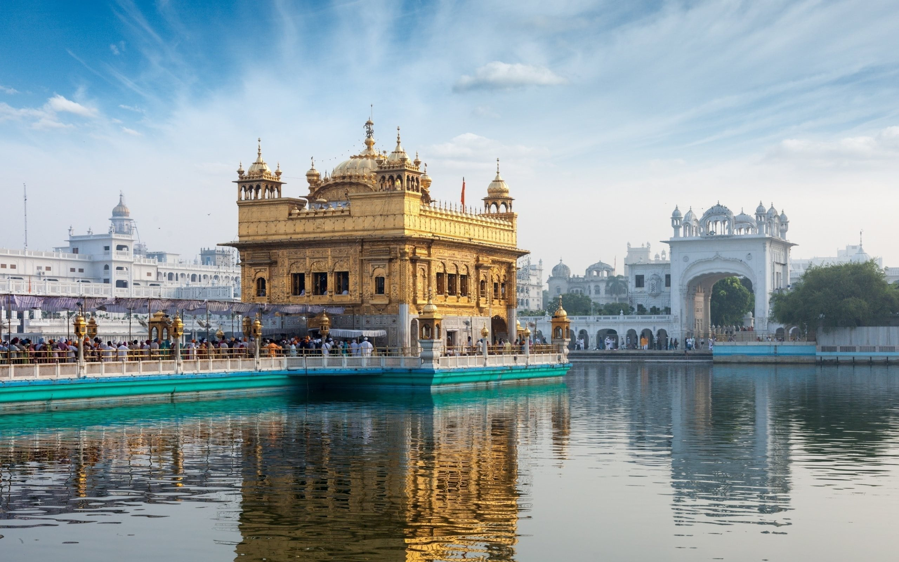
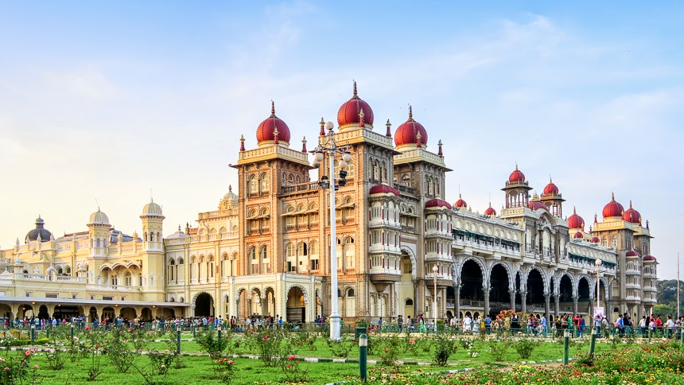

HISTORICAL PLACES IN INDIA
TAJ MAHAL

The Taj Mahal is an ivory-white marble mausoleum on the south bank of the Yamuna river in the Indian city of Agra. It was commissioned in 1632 by the Mughal emperor, Shah Jahan (reigned from 1628 to 1658), to house the tomb of his favourite wife, Mumtaz Mahal.
AGRA FORT
Agra Fort is a historical fort in the city of Agra in India. It was the main residence of the emperors of the Mughal Dynasty till 1638, when the capital was shifted from Agra to Delhi. The Agra fort is a UNESCO World Heritage site.It is about 2.5 km northwest of its more famous sister monument, the Taj Mahal.
QUTUB MINAR
Qutab Minar is a soaring, 73 m-high tower of victory, built in 1193 by Qutab-ud-din Aibak immediately after the defeat of Delhi's last Hindu kingdom. The tower has five distinct storeys, each marked by a projecting balcony and tapers from a 15 m diameter at the base to just 2.5 m at the top.
KONARK TEMPLE

Konark Sun Temple is a 13th-century CE (year 1250) Sun temple at Konark about 35 kilometres northeast from Puri city on the coastline in Puri district, Odisha, India. The temple is attributed to king Narasimhadeva I of the Eastern Ganga dynasty about 1250 CE.
VICTORIA MEMORIAL
The Victoria Memorial is a large marble building on the Maidan in Central Kolkata, built between 1906 and 1921. It is dedicated to the memory of Queen Victoria, Empress of India from 1876 to 1901.
GOLDEN TEMPLE
The Golden temple is located in the holy city of the Sikhs, Amritsar. The Golden temple is famous for its full golden dome, it is one of the most sacred pilgrim spots for Sikhs. The Mandir is built on a 67-ft square of marble and is a two storied structure.
MYSORE PALACE
Mysore Palace, also called Amba Vilas Palace, is one of the most magnificent and largest palaces in India. Situated in the southern state of Karnataka, it used to be the official residence of the Wodeyar Dynasty, the rulers of Mysore from 1399 to 1950. The grand palace stands tall in the heart of Mysore city and attracts visitors from across the world.